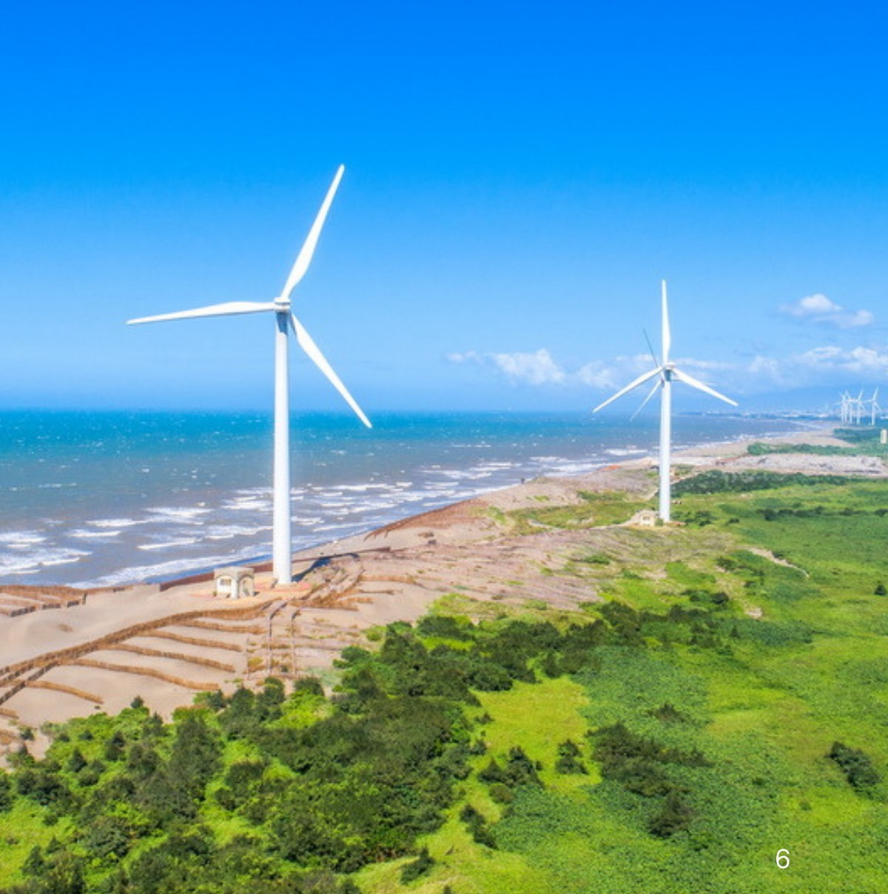
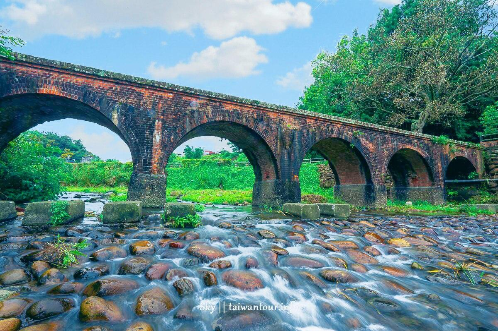

經過設計的節奏
每一站的停留時間都被精算過。讓你既不趕路，也不虛耗。早晨的開闊、午後的風、傍晚的人情味，都剛剛好。
無論是海風的輕撫，還是山林的靜謐——桃園一日，兩條路線，從中原大學出發，約 9 小時完整體驗，NT$700 起。
先把交通、餐點與體驗費用整理成清楚區間，省下排行程的時間，把心力留給風景。
每一站的停留時間都被精算過。讓你既不趕路，也不虛耗。早晨的開闊、午後的風、傍晚的人情味，都剛剛好。
NT$700–1,300 為每人預估總花費，涵蓋交通分攤、餐點與在地體驗費用。出發前先看清楚，不臨時猜價格。
從中原大學集合，一群年輕旅人一起搭車、一起拍照、一起吃飯。比一個人輕鬆，比團體旅行自由。
兩條路線出發時間相近、預算相當、整體節奏類似——差別在你今天想被海風吹，還是被林間光斑包圍。

用濕地、天空與水鳥作為開場，讓旅行一開始就離日常遠一點。

沙丘、海風與風車同框，是桃園海岸線最有辨識度的畫面之一。

百年紅磚拱橋藏在龍潭山林，是桃園山線最有故事感的停靠點。
交通分攤、餐點與在地體驗費用先整理成參考區間。每人 NT$700–1,300，約 9 小時完整體驗。
從中原大學集合，全程同行。線上 5 分鐘完成報名，當天輕鬆出發。
看完海岸與山線的時程與重點，挑出最符合心情的那一條。週末與熱門日期皆可預約。
透過報名表單填寫人數與聯絡方式，加入 LINE 群組接收細節，5 分鐘完成。
當天到中原大學集合點報到，剩下的交給我們。你的任務只剩拍照、吃飯、放鬆。